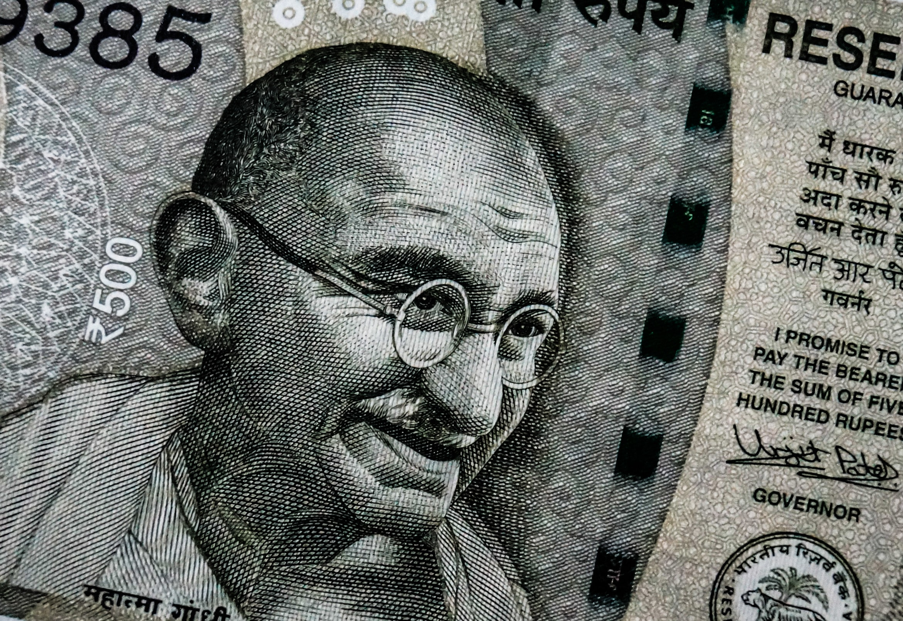

Mahatma Gandi
A great soul
Mahatma Gandhi's timeline:
- 1869 - Birth at Porbandar.
- 1893 - Thrown off the first class carriage of the train at Pietermartizburg Station
- 1896 - Public lecture at Poona; chaired by Ramkrishna Bhandarkar.
- 1906 - Advent of Satyagraha at Empire Theatre, Johannesburg, where people took a pledge with God as their witness, to oppose the Black Act.
- 1925 - The publication of 'Autobiography or The Story of My Experiments with Truth' commences in Young India.
- 1931 - In London as the sole representative of the Congress at the Second Round Table Conference.
"A man is but a product of his thoughts. What he thinks he becomes."